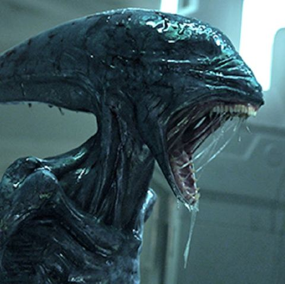

Home
!?
The creatures of Cebronix range from earthlings like humans to out of the ordinary species like aliens..


Humans
Humans are the most abundant and widespread species of primate,
characterized by bipedalism and large,
complex brains. This has
enabled the development of advanced tools, culture, and language.
They are
the main reason Cebronix thrives and continues to be high
power against enemy planets today.
Vampires
Vampires are creatures that feast on all living creatures on Cebronix.
Most vampires are able to control
themselves but some cant and they can
be so deadly that towns in Cebronix have to evacuate to have a good shot at
staying alive
Aliens
Aliens are creatures that have come from other planets to suit their needs.
All different types of aliens live on
Cebronix, they range from super cute ,
and friendly aliens to super deadly and population wiping ones.